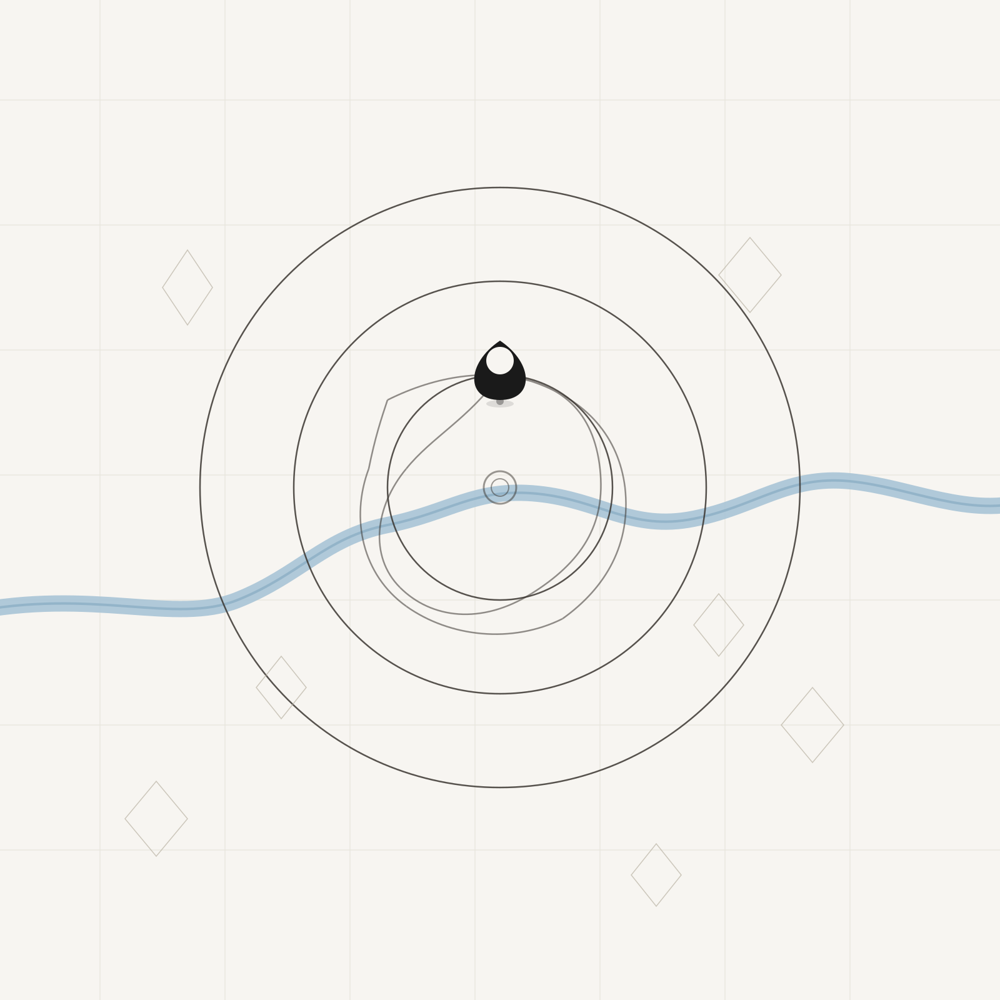
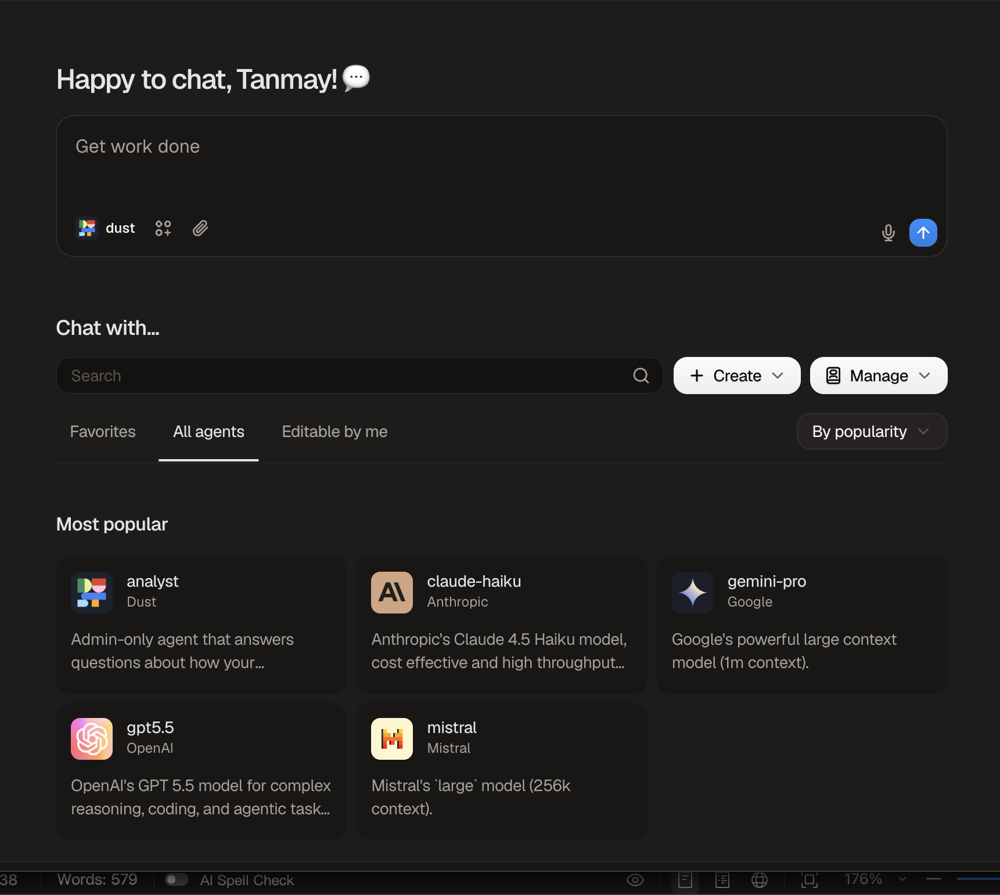

The 30-Second Read
Dust builds AI agents for companies, out of Paris, backed by Sequoia. Revenue is growing fast, but the very standard everyone credits it for (MCP, which lets any AI connect to any tool) also lets competitors copy its core feature. I wrote this memo to decide whether an early investor should put more money in. My answer: yes, but a small amount, and only at a price that assumes the likely ending is a strategic acquisition, not an independent giant.
Independent Institutional Research
ENTERPRISE AI · AGENT PLATFORMS · PARIS, FRANCE
Dust
Series B (closed)
/
July 10, 2026
Prepared by
Tanmay Gambhir
— Bocconi × ESSEC MIM
Prepared for Investment Committee Review
Investment Recommendation
★★★☆☆
Moderate, Bounded Conviction
Sizing & Entry Math
Up to $2–3M via secondary, only at or below the Series B implied price (internal estimate $350–500M post). At a $400M reference price, $2–3M buys roughly 0.5–0.75%. This is a monitoring position — a small stake taken mainly to track the company closely; even a total loss does not move fund returns.
Path to Entry
The round is closed, so the realistic paths in are employee or early-investor secondary if access opens, and in parallel a Series C relationship built now, with the investment case re-evaluated on aged-cohort retention and margin disclosure before any larger check.
—Bet on the team before the category. Sequoia's three consecutive re-ups is the strongest signal in the cap table, and a much lower bar than a standalone investor needs to clear.
—History says companies in Dust's position usually end in a strategic acquisition (MuleSoft, Segment, Looker), not as independent giants (Snowflake, Okta). The bull case needs a specific product milestone that has not happened yet: workspace memory becoming an asset a customer cannot rebuild elsewhere.
—Price to a 3–6x outcome. Any valuation that requires the 20x+ Snowflake outcome to work should be a clean pass, regardless of team quality.
We Become More Bullish If
Aged (2023–24) cohorts hold retention above 150% at scale · a churned customer measurably loses capability it cannot rebuild · gross margin improves as MCP cuts integration costs · win rate stays strongest in non-Microsoft accounts.
We Become Bearish If
Aged-cohort retention falls below ~120% · OpenAI or Microsoft ship native connector-plus-agent bundles that win head-to-head deals · the credit-metering repricing churns installed accounts · the Series B turns out to have priced above ~$500M (20x+ ARR).
Next Steps — What We Are Asking For
1. Founder meeting to validate aged-cohort (2023–24) retention and gross margin trajectory.
2. CFO diligence call: runway, burn, revenue mix, customer concentration.
3. Secondary market price discovery via brokers; confirm any transfer restrictions.
4. Track win rate in non-Microsoft, multi-cloud accounts ahead of a Series C decision.
The round is closed, so nothing needs to be decided today. Full reasoning follows in the pages behind this one; the thesis in one page is overleaf.
Investment Thesis
The Thesis, in One Page
Why Now
ARR grew from roughly €1M at the Series A (mid-2024) to $20M+ by early 2026, roughly 18x in eighteen months. Dust waited and raised the Series B on that stronger number rather than taking a bridge round at $6–7M. The seventeen-month gap since the Series A reads as deliberate capital discipline, not difficulty raising.
Path to Entry
The round is closed. The realistic paths in are a small secondary position if access opens, or a Series C entry built on a relationship that starts now. Either is underwritten on Sequoia's third consecutive re-up (seed, A, B co-lead), the strongest signal in the cap table, not on the category being what everyone hopes it is.
Biggest Risk
MCP standardizes away the 100+ connector library, Dust's clearest current moat, at almost exactly the moment the market is citing it as a strength.
Recommendation
INVEST — SMALL FOLLOW-ON
★★★☆☆
"Bet on the team before the category. Price this like MuleSoft, three to six times, not Snowflake at twenty-plus. Any number that requires the exception to be true is a pass, however good the founders are."
Company Snapshot & Funding
Who is Dust?
Dust lets organizations build and run a fleet of AI agents that work inside the same projects, data, and tools as their employees, rather than each person prompting an isolated chat window.
Dust
Enterprise AI · Agent Platforms
Series B
Paris, France · dust.tt

Founded
2023 · Paris, France
Employees
~66 (growing post-Series B)
Stage
Series B (closed May 2026)
Investors
Sequoia · Abstract (co-leads)
Snowflake Ventures · Datadog Ventures
Funding History — All Three Rounds Sequoia-Anchored
Round
Date
Amount
Investors
Seed
2023
€5M
Sequoia Capital
Series A
June 2024
$16M
Sequoia Capital
Series B
May 2026
$40M
Sequoia & Abstract (co-led); Snowflake Ventures, Datadog Ventures
The seventeen-month A-to-B gap is long for this AI cycle and reads as discipline, not difficulty. The strategic checks (Snowflake, Datadog) signal partnership and acquisition positioning more than independent price validation. That supports our base case of a strategic acquisition rather than cutting against it.
Key takeaway — Every headline number here is company-reported and not independently audited. We treat it as directionally credible, corroborated by named customers on the record, but not underwriting-grade fact.
Executive Summary
Why Now?
ARR roughly tripled in the nine to twelve months before the raise — the round was priced off a much stronger number than was available a year earlier. A company-growth-curve story, not a market-timing one.
Net Revenue Retention
240%
2x "best-in-class" — read with caution
Customers
3,000+
company-reported, not verifiable
Total Raised
~$61M
$40M Series B, May 2026
Headcount
~66
est. 90–130 post-Series B hiring
Supporting Analysis
—MCP is dismantling the one asset — the 100+ connector library — the company and the market both currently cite as its clearest moat, at the same time it lowers the cost of building a Dust competitor from scratch.
—Model-agnosticism is a genuine, if fragile, wedge: no commercial incentive to route customer data toward improving a foundation model Dust doesn't own, unlike OpenAI, Anthropic, or Google's own enterprise offerings.
—Deep penetration at reference accounts (75–86% of headcount at Qonto, Alan, Pennylane) is real usage lock-in. But 3,000+ customers against $20M ARR implies an average ACV in the mid single-digit thousands, so revenue is almost certainly concentrated in a small set of large accounts. Concentration is undisclosed and a first-order diligence item.
—The 240% NRR headline, read against Bessemer's 120%+ "best-in-class" ceiling, is more consistent with a small, early-cohort artifact than a durable retention profile.
Recommendation
INVEST — SMALL FOLLOW-ON
★★★☆☆
Moderate, Bounded Conviction
Investment Scorecard
How Does It Score?
Competition and Risk hold the score down. The team and traction are genuinely strong, but several of the conditions the thesis needs are only partially in Dust's control.
Scores match the source research memo (Section 21). "Risk" is an analyst-added category, not scored in the source, and is labeled as such below.
Risk (analyst-added)
4.0
★★★★★
Market Overview
How Big Is the Prize?
The category is growing fast enough to matter on either definition — the harder question, in Sections 10–11, is whether Dust captures share as it consolidates or gets squeezed as it standardizes.
Multi-vendor enterprise segment (qualitative)
SAM
CAGR (orchestration)
22.3%
A broader "AI agents" market definition — which includes vertical and consumer-facing tools far outside Dust's category — is sized larger and growing faster ($8.0B → $48.3B, ~43.3% CAGR, 2025–2030, per MarketsandMarkets / Precedence Research). It conflates markets Dust doesn't compete in, so the narrower AI-orchestration-platform figure above (Fortune Business Insights / MarketsandMarkets / Precedence Research, 2025 estimates) is the more relevant TAM. SAM is not separately sized in any public source; Dust's real addressable segment is qualitative — large enterprises structurally multi-vendor and multi-cloud, not "enterprise AI" broadly (Section 11). The SOM figure shown is Dust's own disclosed ARR, not an independent market-size estimate.
Source: Fortune Business Insights, AI Orchestration Market Report, 2025; MarketsandMarkets / Precedence Research, 2025 estimates.
Key takeaway — The category is real and growing 22–43% a year depending on definition, but a large, fast-growing TAM says nothing about who captures it — Sections 12–13 show capital currently rewards narrow, attributable-ROI agents (Sierra) over broad orchestration platforms like Dust.
Competitive Landscape
Who's Really the Competitor?
Not just Glean and Sierra — the biggest threat is the free, bundled agent builder already inside licenses most enterprises have paid for.
Broader Platform
Point Solution
Bundled / Low Price
Premium
MS
Microsoft Copilot Studio / Agent 365
Sierra's ~79x multiple against Glean's ~24x (Writer trades near ~40x) is direct market evidence that capital currently rewards narrow, attributable-ROI agents over broad orchestration platforms. Dust sits in the most contested quadrant: premium and broad, squeezed between free bundled builders on one side and richly funded point solutions on the other.
Founder Profile

Gabriel Hubert
Co-Founder & CEO

Stanislas Polu
Co-Founder & CTO
"Profitability is not what we're optimising for in the near term — the raise is about acceleration, not survival."
— Gabriel Hubert, Series B announcement interview, Sifted, May 2026
Is This the Right Team?
A repeat-founder pair whose backgrounds map almost exactly onto Dust's two hardest problems: enterprise sales into risk-averse buyers, and frontier-model fluency.
—Hubert is Alan's former CPO. He sold enterprise health insurance into exactly the risk-averse, compliance-heavy European buyers Dust now serves (Qonto, Pennylane).
—Polu spent three years on OpenAI's LLM reasoning team alongside Ilya Sutskever. Frontier-model fluency is built into the founding team, not hired in later.
—Both were among Stripe's first 150 employees after it acquired their startup, and worked on AI-heavy fraud and risk systems there. Company-building discipline learned inside one of the best-run startups of its generation.
—The repeat-founder signal shows up directly in the cap table: Sequoia backed the team through three consecutive rounds — seed, Series A, and Series B co-lead. The seed partner's own words: "the kind of founders we dream of partnering with" (Konstantine Buhler, Sequoia, July 2023).
Prior Experience
Co-founded TOTEMS — acquired by Stripe (2013)
Prior exit as a pair; both then worked at Stripe
Stripe — product & engineering
Post-acquisition; enterprise-grade product discipline
Hubert: CPO, Alan · Polu: OpenAI reasoning team
Pre-2023, immediately before founding Dust
Team Dynamics & Key-Person Risk
This is a two-person founding pair with a decade-plus of working history (TOTEMS, Stripe) and cleanly complementary roles: Sequoia's seed memo describes Polu as "an engineer's engineer" and Hubert as "a product person's product person." That history lowers co-founder-conflict risk, but concentrates it: with only two founders over a ~66-person company, the departure of either would materially impair the business. Key-person dependency is carried on the Risk Matrix.
Product Walkthrough
The Product in Thirty Seconds
One real deployment, end to end: Qonto's content-localization agent ("Tolki"), from problem to measured return.
1 · Problem
Marketing content must ship in four languages. Translation agencies take days and lose product terminology.
2 · Workflow
The team builds an agent in Dust's no-code builder, pointing it at brand guidelines in Notion and past approved translations.
3 · Agent
"Tolki" runs inside the shared workspace: any marketer invokes it from Slack; it reads company context no generic chatbot has.
4 · Output
On-brand localized copy in minutes, with the agent's sources and steps visible for review before publishing.
5 · ROI
Qonto reports ~70% faster localization and ~50,000 hours saved per year across all its Dust agents (~24 full-time equivalents).
Problem → Workflow → Agent → Output → ROI · Sources: Dust customer story (Qonto); SaaStr; Artefact interview — vendor-reported, directionally credible

Why this matters — The same pattern repeats per team: compliance ("Germi"), support triage, code search. Each agent is cheap to build, runs where employees already work, and adds to a shared library. That is the mechanism behind the 75–86% adoption numbers, and it is why usage compounds inside an account once the first agent lands.
Product Breakdown
What Does It Actually Do?
A shared workspace for humans and agents, not another chat window — the differentiation is real, but every piece of it is also the piece MCP is most likely to commoditize.
Shared Agent Workspace
The "multiplayer" claim is concrete: several people and several agents collaborate in shared projects with shared context and permissions, where Copilot or a custom LangChain build defaults to isolated per-user chat sessions. This, not the integrations, is the durable part of the product.
100+ Connectors
A real, continuously maintained integration library across Notion, Salesforce, Slack, GitHub and more — Dust's clearest current moat, though MCP threatens to commoditize it.
Model-Agnostic Orchestration
No proprietary foundation model — routes across OpenAI, Anthropic, Mistral, and Google, trading margin control for a genuine no-conflict-of-interest trust argument.
Founder's frame —
Hubert's stated thesis is that companies become multi-human, multi-agent systems sharing memory and work, and that enterprises will trust agents not for intelligence but for manageability: explainability, observability, and policy. He also names enterprise memory management (whose preferences win when personal, team, and company rules conflict) as one of the hardest unsolved problems. That is intellectually honest, and it is the same milestone this memo's bull case turns on: workspace memory becoming genuinely irreplaceable. The founder is betting the company on the outcome we assign 15% (founder interview on agent-native organizations, 2026).
Editor's note —
MCP is commoditizing the connector library, the asset most often cited as Dust's moat. Product durability now rests on orchestration UX and accumulated workspace memory, not integrations. This is the central open question about the product (see Risk Matrix). The mid-2026 shift to credit-metered pricing is covered under Business Model.
Customer Voice
What Do Buyers Actually Say?
Qualitative evidence from customers, review platforms, and public interviews. Strongly positive, with one important caveat at the bottom.
"This has translated into thousands of hours saved per year, allowing us to focus on more meaningful tasks."
— Aymeric Augustin, CTO, Qonto (Artefact interview). Qonto reports ~two-week payback and a ~20% productivity gain on affected workflows.
Custom agents that understand internal terminology delivered a "40% reduction in repetitive questions" during onboarding.
— G2 reviewer, 2026. Dust holds a 4.9/5 G2 rating across 19 reviews; recurring praise: no-code agent building, sharing agents across teams.
Reported Outcomes Across Reference Accounts (vendor-reported or vendor-adjacent; directional)
70%
weekly usage across Doctolib's 3,000 employees
100%
adoption at Clay while scaling headcount 4x
50%
faster support-ticket closing at Malt
86
custom assistants built by Pennylane's teams
Implementation Pain Points (from reviews)
A real learning curve for agent builders (Dust Apps, connection scoping) · gaps in the connector catalog for some data sources · per-seat pricing adds up at org-wide scale · SSO, provisioning, and storage gated to the Enterprise tier · weaker interface localization for non-English teams.
Adoption Resistance (from the buyer's chair)
Qonto's CTO names initial employee resistance to AI tools as the main rollout challenge, not the technology. The pattern in successful accounts is executive sponsorship plus permission to experiment, which matches the founder's own adoption playbook.
Caveat —
The public record is thin and skews vendor-published: 19 G2 reviews is a small sample, several case studies sit on Dust's own site, and independent critical commentary is scarce. That is normal for a company this young, but it means the customer evidence is directional, not audited — the founder reference calls in Next Steps are how we close this gap.
Business Model
How Does It Make Money?
Credit-metered SaaS, overhauled mid-2026 from a flat €29/seat model — pricing is well-documented, unit economics are not.
Why the overhaul: on flat €29 seats, heavy users consumed LLM inference Dust pays for per token, so the heaviest (best) customers were the least profitable. Metering credits re-couples price to cost of goods. Hubert has articulated the logic publicly: pricing will fragment into seat-based (everyday productivity), workload-based (long-running agent tasks), and usage-based layers, and companies that adopted pure token pricing too early tied their economics to a falling cost curve instead of customer value. The overhaul is the right economic move and a real execution risk at once, since repricing an installed base mid-growth invites churn in exactly the accounts the retention story depends on.
CAC, LTV, and payback are shown as "Not Disclosed" rather than estimated. Dust is private and has released no unit-economics breakdown. Sources: Dust pricing page; Series B coverage (Sifted, Tech.eu, May 2026).
Gross Margin
Not Disclosed
Structurally driven by third-party LLM inference costs (OpenAI, Anthropic, Mistral, Google) — a price Dust does not set.
Profitability
Not profitable
CEO has stated profitability is not the near-term priority (Sifted, May 2026). The raise funds acceleration, not survival.
Revenue Mix
Not Disclosed
3,000+ customers vs $20M ARR implies mid-single-digit-thousands average ACV; a small set of enterprise accounts likely carries most revenue.
Free
$0
500 lifetime credits — trials and occasional users.
Pro
$30/mo ($24 annual)
8,000 credits/month — individual power users.
Max
$150/mo ($120 annual)
40,000 credits/month — heavy, workflow-embedded users.
Enterprise
Custom
Workspace-pooled credits, volume pricing, SSO/SCIM, audit logs, single-tenant options.
Financial Dashboard
Are the Financials Healthy?
Growth is real and roughly 18x in eighteen months; the profitability picture underneath it is entirely undisclosed.
ARR Growth (self-reported, $M equivalent)
Figures mix EUR and USD as originally disclosed — directional, not precise
Gross Margin
Not Disclosed
Burn Multiple
Not Disclosed
Runway
Not Disclosed — critical diligence item
Rule of 40
N/M — margin undisclosed
Capital Efficiency
~$110K ARR / employee
Estimate at last joint disclosure (~66 employees against ~$7.3M ARR). A real strength: Dust reached $20M+ ARR on ~$21M of pre-Series B capital.
Headcount Basis
~66 (late 2025)
Used consistently throughout this memo. Estimated to grow to 90–130 as Series B hiring lands; per-employee figures will compress accordingly.
Watch — No Margin Bridge Shown
COGS, OpEx, and EBITDA are not publicly disclosed, so no Revenue-to-EBITDA waterfall is shown here — plotting one would mean inventing numbers. What is known: Dust's largest variable cost is third-party LLM inference (OpenAI, Anthropic, Mistral, Google), so gross margin is structurally a function of a price Dust does not set, not an internally optimized figure the way a single-model vendor's would be.
Valuation Reference Points
Reference Points, Not a Price
No Series B valuation has been disclosed — companies with strong pricing momentum usually attach a number to the announcement; its absence is a diligence question, not something to assume away.
Comparable ARR Multiple — Internal Estimate Only
Low confidence — not a company-disclosed figure; DCF and precedent-transaction methods are not shown, no source supports building them for Dust specifically
Comparable Multiples
Dust (est.)~15–25x ARR
Glean~24x ARR
Sierra~79x ARR
Writer~40x ARR
Segment (2020 M&A)~16–21x ARR
Series B Valuation
Not Publicly Disclosed
Internal Estimate (Low Confidence)
$350–500M
The work: $20.5M ARR × 15–25x (the comps band Dust's positioning supports) = $310–510M, shown as a $350–500M mid-band. No DCF or precedent-transaction method is shown; no public source supports building either for Dust specifically.
SWOT Analysis
Where's the Leverage?
The strongest strength (Sequoia's re-ups) and the sharpest threat (MCP) both live at the level of signal and standard, not product — that's the real risk profile here.
Strengths
—Sequoia's three consecutive re-ups (seed → A → B) — the single strongest cap-table signal, hard to fake
—Elite, well-matched founding team — Stripe/OpenAI/Alan pedigree, ~$110K ARR/employee at last disclosure
—Deep account penetration — 75–86% of headcount actively using dozens of custom agents at reference customers
Weaknesses
—No foundation model of its own — gross margin is a function of a price Dust doesn't set
—240% NRR is nearly double the 120% "best-in-class" SaaS benchmark — reads as small-base artifact, not durable retention
—Unit economics are opaque, and what is known cuts the wrong way: gross margin is set by third-party LLM prices, which points to structural margin-compression risk, not just a disclosure gap
Opportunities
—The multi-vendor, non-Microsoft-committed enterprise segment is real, defensible, and currently underserved by bundled incumbents
—MCP commoditizes connectors for everyone, which also lowers Dust's own COGS — if Dust holds orchestration value while integration costs fall, margins improve. Falsifiable: watch gross margin trend as MCP adoption spreads
Threats
—MCP standardizes away the connector library and lowers the cost of building a Dust competitor more than it lowers Dust's own cost to build
—Microsoft, Salesforce (Agentforce, $1.2B ARR, +205% YoY), and Google can each bundle a competing layer into licenses already paid for
Porter's Five Forces
How Much Structural Power?
Supplier power is the force most memos on AI-native companies underweight — Dust owns no model, so its margin is hostage to four labs' pricing decisions.
Threat of New Entrants
HIGH
MCP removes the primary structural barrier to entry, the connector library. Enterprise trust and orchestration UX still take time to replicate, but the moat is now speed, not structure.
Supplier Power
HIGH
Total dependency on third-party LLM providers (OpenAI, Anthropic, Mistral, Google) for the core input — gross margin is a price Dust doesn't set.
Buyer Power
MODERATE
Switching is a project rather than a crisis today, which caps how much lock-in the shared workspace really provides and gives large accounts genuine pricing leverage. Customer concentration is undisclosed.
Threat of Substitutes
HIGH
Microsoft Copilot Studio/Agent 365, Salesforce Agentforce, and Google Gemini Enterprise all offer bundled, governed agent-building inside licenses already paid for.
Competitive Rivalry
HIGH
Glean ($300M ARR, $7.2B valuation), Sierra ($950M in a single round), Microsoft Copilot Studio / Agent 365, Salesforce Agentforce ($1.2B ARR, +205% YoY), Google Gemini Enterprise, and OpenAI's own enterprise agent tooling are all live competitors. Dust has raised ~$61M in total; Sierra raised $950M in one round. The capital gap is 15–100x.
Risk Matrix
What Could Kill This?
The two risks in the highest-severity quadrant, MCP commoditization and hyperscaler bundling, are both things Dust's own execution can only partially blunt. If the Series B priced at $400M+ on $20M ARR, that is a 20x+ entry multiple — the undisclosed valuation is a diligence gap with real return consequences, not a footnote.
MCP commoditizes connectors
Hyperscaler bundling
NRR reverts as cohorts age
Capital disadvantage (15–100x)
Valuation undisclosed — entry price unknowable
Key-person dependency (two founders, ~66 staff)
Likelihood →
Scenario Analysis
What Has to Be True?
The base case is the underwriting anchor. The bull case is a specific crossing Dust has to achieve, not a natural byproduct of growing ARR.
Probabilities are analyst-assigned, not derived from the source data. The modest bull weight reflects Sequoia's triple re-up set against the unproven memory-asset crossing.
Workspace memory becomes a genuine, hard-to-rebuild asset before a well-funded incumbent catches up on features — the path to an independent giant, as with Snowflake or Okta.
Observable triggers: a churned customer measurably loses capability it cannot rebuild elsewhere; aged (2023–24) cohorts hold NRR above 150% at scale; win rate stays strongest in non-Microsoft, multi-cloud accounts.
Underwriting Outcome
Independent giant — 20x+
A strategic infrastructure acquisition — the path MuleSoft, Segment, and Looker took. The team executes well inside the defensible non-Microsoft segment; workspace memory stays convenient rather than irreplaceable.
Consistent with: the strategic checks already on the cap table (Snowflake Ventures, Datadog Ventures) and the comps band capital assigns broad orchestration platforms.
Underwriting Outcome
3–6x — the anchor
A bundled incumbent catches up on features before workspace memory becomes a real asset; the 240% retention headline falls back toward normal as customer cohorts age.
Observable triggers: aged-cohort NRR reverting below ~120%; losses to Copilot/Agentforce in accounts already licensed for them; gross margin compressing as metered pricing fails to hold.
Underwriting Outcome
Below 1x on late entries
Sensitivity — What Each Shock Does to the Value Case
Analyst estimates. Multiples move against the ~15–25x reference band from Valuation Reference Points; no company guidance exists.
Shock
Transmission
Valuation Effect
NRR falls to ~105%
Growth story breaks; Dust reprices from "hypergrowth AI" to ordinary SaaS comps
15–25x → ~5–8x
OpenAI ships native enterprise connectors
Connector moat gone at the source; orchestration UX is the only remaining differentiation
Bear case accelerates
Glean bundles agent-building
The premium-broad quadrant collapses into a feature war against a rival with ~15x Dust's capital
Multiple compresses toward ~10–15x
Enterprise AI budgets slow
Category multiples deflate together; an undisclosed and likely rich Series B price raises down-round risk
Down-round risk on entry
Sources
References
17Gabriel Hubert, founder interview on agent-native organizations (video, 2026) — pricing evolution, trust model, enterprise memory
Data Confidence Levels
HIGH — Funding rounds and amounts; pricing tiers
MEDIUM — ARR, customer count, headcount (company-reported)
LOW — 240% NRR; the $350–500M internal valuation estimate
NOT DISCLOSED — Margins, runway, burn, CAC/LTV, revenue mix
Figures marked company-reported are treated as directionally credible, not audited. The underlying internal research memo and its appendices are primary documents for this review. The founder quote on the Founder Profile page is from the Series B announcement interview (Sifted, May 2026).
Appendix
Supplementary Exhibits
Exhibit A — Data Confidence by Point
Data Point
Value Used
Confidence
Funding rounds & amounts
€5M / $16M / $40M (~$61M)
HIGH
Pricing tiers
$0 / $30 / $150 / custom
HIGH
ARR
$20M+ (early 2026)
MEDIUM
Customers
3,000+
MEDIUM
Headcount
~66 (late 2025)
MEDIUM
Net revenue retention
240% (self-reported)
LOW
Series B valuation
$350–500M (internal est.)
LOW
Gross margin, runway, burn, CAC/LTV, revenue mix
—
NOT DISCLOSED
Exhibit B — Cap Table Signal Breakdown
Sequoia Capital
Three consecutive rounds (seed → A → B co-lead). The strongest signal in the cap table and hard to fake; a re-up requires internal conviction against a live portfolio.
Abstract
Growth-stage co-lead; an atypical check for the firm's usual profile. Interpret with caution rather than as independent validation of price.
Snowflake Ventures
Strategic, not independent underwriting. Signals data-stack partnership positioning, and keeps an acquirer close — consistent with the MuleSoft-shaped base case.
Datadog Ventures
Same read: strategic observability-stack interest, not price discovery.
Exhibit C — Comparable Companies
Company
Positioning
Implied Multiple
Outcome Analog
Dust
Broad orchestration platform, premium, model-agnostic
~15–25x (est.)
Open
Glean
Broad enterprise search/agents; $300M ARR, $7.2B Series F
~24x
Independent (so far)
Sierra
Narrow, attributable-ROI customer agents; $950M single round
~79x
Category darling
Writer
Enterprise writing/agents platform
~40x
Independent (so far)
MuleSoft
Integration platform; acquired by Salesforce, 2018
n/a (M&A)
Base-case analog
Segment
Customer data platform; acquired by Twilio, 2020
~16–21x
Base-case analog
Looker
BI platform; acquired by Google, 2019 ($2.6B)
n/a (M&A)
Base-case analog
Snowflake / Okta
Independent public giants
n/a
Bull-case analog
"What would change our mind" is carried in Scenario Analysis (observable triggers), not duplicated here.
Independent research based solely on public sources. Not affiliated with, or endorsed by, Dust. Not investment advice. Founder photographs omitted from the public edition for image-rights reasons.